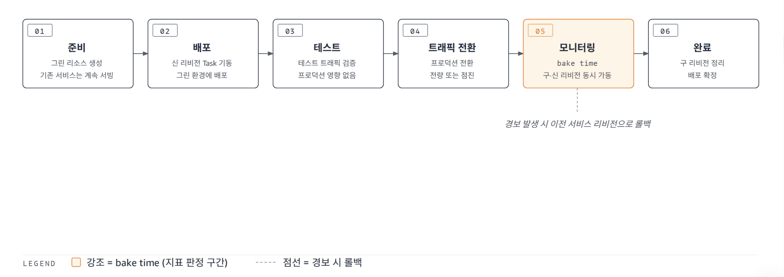

Amazon ECS에서 새 리비전을 무엇으로 배포하고 네트워크와 스토리지, 플랫폼 옵션은 어떻게 선택할지에 답합니다. 점진적 트래픽 제어가 필요 없으면 기본값인 Rolling, 점진적인 전환이면 Linear나 Canary, 선검증 후 즉시 전환이면 내장 Blue/Green을 선택합니다. 설계할 때는 Service Connect namespace당 서비스 300개, Fargate On-Demand vCPU 초기값 6 같은 서비스 쿼터를 상한으로 확인해야 합니다.This post answers what to deploy a new revision with on Amazon ECS and how to choose networking, storage, and platform options. Choose rolling, the default, if you don't need gradual traffic control, linear or canary for a gradual shift, and built-in blue/green for validation first and then an immediate cutover. When you design, check service quotas as upper limits, such as 300 services per Service Connect namespace and an initial Fargate On-Demand vCPU value of 6.
이 글은 Amazon ECS 실행 구조와 선택 기준을 다루는 시리즈의 2부입니다. 1부에서는 launch type은 호환되는 실행 환경을 표시하는 용도로만 사용하고 실제 실행은 용량 공급자(capacity provider)로 구성한다는 원칙에서 출발했습니다. 이 원칙을 바탕으로 Fargate와 ECS Managed Instances, EC2에 걸친 컴퓨트 선택과 Express Mode부터 예약 Task까지의 실행 형태를 살펴봤습니다.
2부에서는 남은 선택지를 다룹니다. 6종으로 증가한 배포 전략에서 시작해 네트워크와 스토리지, 플랫폼 옵션을 살펴보고 마지막에 두 편에서 다룬 선택 기준을 종합해서 상황별 선택 가이드와 설계 상한이 되는 서비스 쿼터로 제안해 봅니다.
01
새 리비전(revision)을 내보내는 방법은 Rolling, CodeDeploy Blue/Green, External 3종에서 6종으로 증가했습니다. 공식 문서의 구조는 배포 컨트롤러 3종(ECS, CodeDeploy, External) 입니다. 이 중에서 ECS 컨트롤러가 ROLLING, BLUE_GREEN, LINEAR, CANARY 4개 전략을 포함합니다. 모두 고려하면 6가지 방식이고 기본값은 Rolling입니다. 표 1은 6종 각각의 트래픽 전환 방식과 로드밸런서 요구 사항, 그리고 어떤 상황에 적합한지를 정리했습니다.
| 전략 | 컨트롤러 | 전환 방식 | 로드밸런서 요구 | 적합 상황 |
|---|---|---|---|---|
| Rolling | ECS | Task 점진 교체. minimumHealthyPercent 하한과 maximumPercent 상한으로 속도 제어 | 불필요 | 점진적 트래픽 제어가 불필요한 대부분의 서비스. 기본값이며 로드밸런서를 요구하지 않는 전략 |
| Blue/Green (내장) | ECS | 그린 환경을 테스트 트래픽으로 선검증 후 프로덕션 트래픽 전량 즉시 전환 | ALB/NLB 또는 Service Connect | 즉시 전환과 신속 롤백이 필요한 서비스 |
| Linear | ECS | 동일 비율 증분으로 점진 전환. step 3.0~100.0%(0.1 단위), step bake 0~1,440분 | ALB/NLB 또는 Service Connect | 트래픽을 조금씩 옮기며 지표를 확인해야 하는 서비스 |
| Canary | ECS | 2단계 전환: 소량 트래픽 선검증 후 나머지 일괄 전환 | ALB/NLB 또는 Service Connect | 새로운 버전을 소량 트래픽으로 먼저 검증하고 싶은 서비스 |
| Blue/Green (CodeDeploy) | CODE_DEPLOY | CodeDeploy 사전 정의 구성으로 canary / linear / all-at-once 전환 | ALB/NLB 필수, NLB는 all-at-once만 | 기존 CodeDeploy 파이프라인을 유지해야 하는 팀 |
| External | EXTERNAL | 서드파티 컨트롤러가 task set의 scale 값으로 직접 제어 | 선택. 사용 시 ALB/NLB만 | 자체 배포 도구를 가진 조직 |
표 1. 배포 전략 6종: 방식과 적합 상황
선택 기준의 권고사항으로 CodeDeploy Blue/Green 배포 문서는 내장된 Blue/Green 사용을 권장한다고 밝힙니다. CodeDeploy 방식은 기존 파이프라인을 유지해야 하는 경우의 선택지로 남습니다.
내장 Blue/Green, Linear, Canary는 CodeDeploy 없이 ECS 컨트롤러가 직접 수행하며 준비, 배포, 테스트, 트래픽 전환, 모니터링, 완료의 공통 6단계 구조를 공유합니다. 세부적으로는 11개 lifecycle stage로 나뉘고 스테이지에는 배포 흐름에 사용자 로직을 삽입하는 두 종류의 훅(hook)을 걸 수 있습니다. 검증 로직을 자동 실행하는 AWS Lambda 훅에 더해, 일시 정지(pause) 훅은 ContinueServiceDeployment API로 계속 진행이나 롤백을 지시할 때까지 배포를 멈춥니다. 수동 승인 게이트가 필요한 팀에게는 이것이 직접적인 수단으로, 타임아웃(기본 24시간, 최대 14일)이 만료되면 지정한 동작을 수행하며 기본값은 롤백입니다. 트래픽 전환 후 배포 이전 버전인 구 리비전과 새로 배포한 신 리비전을 동시에 가동하며 지표를 지켜보는 구간인 bake time이 끝나야 기존 환경이 정리됩니다.

역할 구분이 중요합니다. 내장 Blue/Green의 프로덕션 전환은 전량 즉시(all-at-once)이므로, 점진적인 전환이 필요하다면 선택지는 Linear나 Canary입니다.
Rolling의 교체 속도는 배포 중 Task 수가 지켜야 할 하한과 상한으로 정해지며 두 값 모두 서비스의 목표 Task 수인 desiredCount 대비 백분율로 지정합니다. 하한인 minimumHealthyPercent는 유지해야 하는 정상 Task 수를 올림으로 계산하고 상한인 maximumPercent는 동시에 실행될 수 있는 전체 Task 수를 내림으로 계산합니다. 예를 들어 min 75%에 desired 2면 올림 결과가 2라서 어떤 Task도 중지할 수 없습니다.
배포 중 비정상이 된 Task는 자신이 속한 것과 동일한 서비스 리비전으로 교체됩니다. 실패 감지는 Task 기동 실패를 잡는 deployment circuit breaker와 애플리케이션 지표를 보는 CloudWatch 경보 2종을 병용할 수 있습니다. 두가지 모두 이전 서비스 리비전으로의 롤백을 지원합니다.
전략 확장과 함께 배포 관측성도 좋아졌습니다. 2026년 7월 1일부터 ECS 콘솔 서비스의 Deployments 탭에서 라이브 배포 타임라인, 서킷 브레이커 상태, Task 실패 실시간 추적, 실패 Task에서 AWS CloudTrail로 이어지는 딥링크를 제공합니다. 다만 이 실시간 배포 관측성은 Rolling 배포 유형 서비스에만 해당하고 Blue/Green 등 다른 전략은 이번 발표 범위 밖입니다.
2026년 7월 21일에 발표된 Action Logs는 서비스 배포와 Managed daemon 업데이트 중 ECS가 고객 대신 수행한 동작을 타임스탬프 기록으로 남깁니다. 이벤트 이름, 로그 레벨(INFO/WARN/ERROR), 리소스 ARN, 상태 이유가 담깁니다. Amazon CloudWatch Logs, Amazon S3, Amazon Kinesis Data Firehose로 전송하고 Amazon Q 통합으로 배포 문제의 근본 원인 분석을 지원합니다. 클러스터 레벨 옵트인 기능이고 전송 대상의 표준 요금이 적용됩니다.
02
Task가 네트워크에 붙는 방식은 컨테이너의 네트워크 연결 방식을 정하는 Task definition 파라미터인 네트워크 모드(network mode)가 정합니다. 모드는 5종이지만 OS에 따라 사용할 수 있는 조합이 다릅니다. 표 2는 EC2 기준으로 모드별 지원 OS와 특징을 정리했습니다.
| 모드 | Linux on EC2 | Windows on EC2 | 특징 |
|---|---|---|---|
| awsvpc | 가능 | 가능 | Task가 전용 ENI(Elastic Network Interface)와 사설 IP를 받습니다. 권장 모드 |
| bridge | 가능 | 불가 | Docker bridge 드라이버 사용. Linux 기본값 |
| host | 가능 | 불가 | 호스트 ENI에 포트 직결. 동적 포트 매핑 불가, hostPort 명시 필수. 같은 Task definition을 한 인스턴스에서 여러 개 실행 불가 |
| none | 가능 | 불가 | 외부 네트워크 연결 없음 |
| default | 불가 | 가능 | Docker nat 드라이버 사용. Windows 기본값 |
표 2. 네트워크 모드 5종: EC2 기준 Linux와 Windows 지원과 특징
Fargate에는 선택지가 없습니다. 서비스 정의 문서는 Fargate 사용 시 awsvpc 모드가 필수라고 명시합니다. awsvpc 모드의 Task는 자기 전용 ENI에 직접 연결되므로, 로드밸런서 타겟 그룹도 ip 타입을 사용합니다.
Task 네트워킹은 IPv4, IPv4와 IPv6를 함께 사용하는 듀얼스택(dual-stack), IPv6-only 세 가지 IP 구성을 지원합니다. IPv6-only는 서울 리전에서도 지원되지만 세 구성 가운데 전제 조건이 가장 많습니다.
--enable-primary-ipv6 필수. 누락하면 host, bridge 모드 Task가 로드밸런서와 AWS Cloud Map에 등록되지 않습니다서비스 사이를 연결하는 공식 옵션은 Service Connect, Cloud Map 기반 DNS인 Service discovery, 서비스 간 연결을 관리형으로 제공하는 Amazon VPC Lattice 3종입니다. 별도로 ALB나 NLB 로드밸런싱을 사용할 수 있습니다. Service Connect는 서비스 디스커버리와 서비스 메시를 ECS 구성만으로 함께 제공하는 기능입니다. Task마다 프록시 컨테이너를 주입해 짧은 이름(short name)과 표준 포트로 서비스 간 통신을 처리하고 기능 자체는 추가 요금이 없습니다. 다만 프록시는 Task 안에서 실행되어 Task의 vCPU와 메모리를 워크로드와 나눠 사용하므로, 요금이 없다는 것과 리소스를 사용하지 않는다는 것은 구분해야 합니다.
서비스 메시를 계획할 때 확인해야 할 일정이 하나 있습니다. AWS App Mesh는 2026년 9월 30일에 지원이 종료되므로 신규 아키텍처에서 제외해야 합니다. 기존 App Mesh 기반 구성은 Service Connect나 VPC Lattice로 마이그레이션해야 합니다.
Service Connect로의 전환은 설정 변경이 아니라 서비스 재생성 이벤트입니다. 하나의 ECS 서비스는 App Mesh의 mesh와 Service Connect namespace에 동시에 속할 수 없기 때문에 서비스를 다시 만들어야 합니다. 무중단이 필요하면 서비스 복제본을 만들어 트래픽을 점진적으로 이전하는 blue/green 방식이 AWS 공식 권고입니다.
namespace 자체에도 상한이 있습니다. 하나의 namespace에서 실행할 수 있는 서비스는 300개로 고정입니다. 서비스가 많은 App Mesh를 이전할 때는 mesh 하나를 namespace 하나로 그대로 옮기지 말고 도메인 단위로 namespace를 나누는 분할 설계를 먼저 검토해야 합니다. Service discovery도 별도 상한이 있습니다. service discovery를 구성한 서비스는 Cloud Map의 서비스당 인스턴스 쿼터 때문에 서비스당 Task가 1,000개로 제한됩니다.
03
Task는 기본으로 임시 스토리지를 받고 지속성이 필요하면 볼륨을 연결합니다. 개발자 가이드의 데이터 볼륨 옵션 가운데 다섯 개의 선택지가 중심이 됩니다.
현재 공식 문서의 볼륨 옵션 표에는 Amazon FSx for NetApp ONTAP과 Amazon S3 Files까지 총 7종이 올라 있습니다. Amazon S3 Files는 S3 데이터를 파일 시스템 인터페이스로 빠르게 캐시 접근하는 지속 볼륨으로, Fargate와 Managed Instances의 Linux Task를 지원합니다. 볼륨마다 지원 컴퓨트가 다르기 때문에 FSx for Windows File Server와 Docker volume이 EC2 전용이라는 점을 포함해 공식 표에서 조합을 확인하고 설계하는 것이 안전합니다.
컴퓨트와 스토리지 외에도 선택을 좌우하는 요소가 여섯 개 있습니다.
ecs.subnet-id, ecs.availability-zone, ecs.instance-type, ecs.cpu-architecture 4종만 허용합니다. Fargate는 둘 다 지원하지 않습니다. Managed Instances와 Fargate의 가용 영역 분산은 플랫폼이 자동으로 처리합니다스케일링 2계층 가운데 Task 계층의 서비스 오토스케일링은 2026년 6월 18일부터 반응 속도가 개선되었습니다. scale-out 트리거까지 걸리는 시간이 363초에서 86초로 76% 줄었고 신규 Task 프로비저닝을 포함한 전체 스케일 시간은 386초에서 109초로 72% 줄었습니다. 20초 간격 고해상도 메트릭 기반이고 Fargate, ECS Managed Instances, EC2 모두 대상이 됩니다. 고해상도 메트릭에는 표준 CloudWatch 요금이 적용됩니다.
용량 계층을 EC2 Auto Scaling group capacity provider로 운영할 때의 관리 노브는 세 가지입니다. managed scaling을 켜면 ECS가 CapacityProviderReservation 메트릭과 target tracking 정책을 만들어 인스턴스의 스케일 인과 스케일 아웃을 대신 관리합니다. target capacity(유효 범위 1~100%)를 100 미만으로 두면 그만큼 여유 용량을 상시 확보해 후속 Task 기동이 빨라집니다. managed termination protection은 Task가 실행 중인 인스턴스가 스케일 인으로 종료되지 않게 보호합니다. 이때 ASG의 instance scale-in protection 활성화가 전제 조건입니다.
04
표 3은 1부의 컴퓨트와 실행 형태부터 이번 편의 배포 및 연결까지, 두 편에서 살펴본 선택 기준을 상황별 권장 조합으로 제안해 드립니다.
| 상황 | 권장 선택 |
|---|---|
| 웹 서비스를 가장 빠르게 올리고 싶다 | Express Mode: 입력 3개로 자동 구성, 이후 직접 관리로 전환 가능 |
| 인프라 운영을 최소화한 표준 서비스 | Fargate capacity provider |
| GPU나 특수 하드웨어는 필요하지만 패치는 맡기고 싶다 | ECS Managed Instances capacity provider |
| OS와 인스턴스를 완전히 통제해야 한다 | EC2 Auto Scaling group capacity provider |
| 온프레미스 하드웨어를 그대로 사용한다 | EXTERNAL launch type (ECS Anywhere) |
| 일회성 배치 작업 / 정기 실행 | RunTask / EventBridge Scheduler 예약 Task |
| 점진적 트래픽 제어가 필요 없는 대부분의 서비스, 로드밸런서 없는 서비스 | Rolling: 기본값이며 로드밸런서를 요구하지 않는 전략 |
| 새로운 버전을 검증하며 트래픽을 옮기고 싶다 | 점진적인 전환은 Linear 또는 Canary, 선검증 후 즉시 전환은 내장 Blue/Green |
| 서비스 메시가 필요하다 | Service Connect 또는 VPC Lattice. App Mesh는 2026년 9월 30일 지원 종료로 제외 |
표 3. 상황별 선택 가이드: 컴퓨트, 실행, 배포, 연결
표 3의 EXTERNAL(ECS Anywhere)은 기능 제약을 전제로 선택해야 합니다. ELB 로드밸런싱, service discovery, awsvpc 네트워크 모드, capacity provider, EFS 볼륨이 지원되지 않으므로, 공식 문서도 인바운드 트래픽을 받는 웹 서비스류 워크로드에는 비효율적이라고 명시합니다.
마지막 주제는 설계 상한이 되는 서비스 쿼터입니다. 표 4는 리전별 기본값 기준의 대표 수치입니다.
| 쿼터 | 기본값 | 상향 조정 |
|---|---|---|
| 계정당 클러스터 수 | 10,000 | 가능 |
| 클러스터당 서비스 수 | 5,000 | 불가 |
| 서비스당 Task 수 (desired count) | 5,000 | 불가 |
| 클러스터당 컨테이너 인스턴스 수 | 5,000 | 불가 |
| Task definition family당 revision 수 | 1,000,000 | 불가 |
| Fargate On-Demand vCPU 수 | 6 (Spot은 별도 6) | 가능 |
표 4. 대표 서비스 쿼터: 리전별 기본값
표 4의 기본값은 AWS가 설정한 초기 쿼터이며 계정에 실제 적용된 값(applied quota)이나 요청 가능한 최대값과는 별개입니다. 또한 service discovery를 구성한 서비스는 서비스 간 연결에서 살펴본 Cloud Map 쿼터 때문에 서비스당 Task가 1,000개로 제한되어, 표의 서비스당 Task 수 5,000보다 먼저 제한됩니다.
Task 기동 속도에도 상한이 있습니다. ECS 스케줄러가 서비스당 1분에 프로비저닝할 수 있는 Task 수는 Fargate 기준 주요 리전 500개, 그 외 리전(2025년 5월 20일 이후 신설 리전 포함) 125개이며 이 쿼터는 조정할 수 없습니다. EC2와 External 인스턴스도 서비스당 분당 500개입니다. 계정 레벨에서는 Fargate On-Demand 기동 속도가 지속(sustained) 초당 20개, 버스트 100개로 별도 제한됩니다(주요 리전 기본값, 상향 요청 가능). 수백 Task 규모의 대량 스케일아웃에서는 오토스케일링의 반응 속도보다 이 기동 상한이 먼저 걸립니다.
두 가지 함정이 있습니다. Task definition revision은 등록을 해제하거나 삭제해도 1,000,000 한도 계산에서 빠지지 않습니다. 그리고 Fargate 쿼터는 Task 수가 아니라 vCPU 개수 기준이고 On-Demand vCPU 초기값은 6에 불과합니다(Spot은 별도로 6). 1 vCPU Task 기준 동시 6개면 한도에 닿는 수준이므로, 신규 계정에서는 첫 부하 테스트나 본 배포 전에 상향을 신청해 두는 것이 좋습니다. 이 값은 상향 요청이 가능하고 Fargate가 리전별 사용량을 관찰해 자동으로 올리기도 합니다.
05
1부 글머리에서 언급한 세 번째 고민, 무엇으로 배포할 것인가를 다시 살펴보겠습니다. 점진적 트래픽 제어가 필요 없으면 기본값인 Rolling, 소량 검증 후 점진적인 전환이면 Linear나 Canary, 선검증 후 즉시 전환이면 내장 Blue/Green을 선택하면 됩니다. AWS는 CodeDeploy 방식보다 내장 Blue/Green을 권장하고 있습니다.
이제 두 편을 정리해 봅니다.
1/ 선언은 Task definition의 requiresCompatibilities에 맡기고 실행은 capacity provider로 구성합니다.
2/ 컴퓨트는 Fargate, Managed Instances, EC2의 책임 분담에서 선택합니다.
3/ 배포는 6종 전략 중 트래픽 전환 요구에 맞는 것을 선택하는 것이 2026년 8월 기준 Amazon ECS의 기본입니다.
본문의 수치와 기본값은 작성 시점 기준이므로, 최신 값은 본문에 링크한 공식 문서에서 확인하시기 바랍니다.
This post is Part 2 of a series on how Amazon ECS runs workloads and how to choose among its options. Part 1 started from one principle: use the launch type only to declare which runtime environments a task is compatible with, and configure where the task actually runs through capacity providers. Building on that principle, it covered the compute choices across AWS Fargate, Amazon ECS Managed Instances, and Amazon EC2, and the ways to run workloads, from Express Mode to scheduled tasks.
Part 2 covers the remaining choices. It starts with the deployment strategies, which have grown to six, moves on to networking, storage, and platform options, and closes by combining the selection criteria from both parts into a scenario-based selection guide and the service quotas that set your design limits.
01
The ways to roll out a new revision have grown from three (rolling, CodeDeploy blue/green, and external) to six. The official documentation is organized around three deployment controllers (ECS, CodeDeploy, and External). Of these, the ECS controller includes four strategies: ROLLING, BLUE_GREEN, LINEAR, and CANARY. Counting them all gives six approaches, and rolling is the default. Table 1 summarizes how each of the six shifts traffic, what it requires from a load balancer, and which situations it suits.
| Strategy | Controller | Traffic shift | Load balancer requirement | Best for |
|---|---|---|---|---|
| Rolling | ECS | Replaces tasks gradually. The minimumHealthyPercent lower bound and the maximumPercent upper bound control the pace | Not required | Most services that don't need gradual traffic control. The default, and the strategy that doesn't require a load balancer |
| Blue/green (built-in) | ECS | Validates the green environment with test traffic first, then shifts all production traffic at once | ALB/NLB or Service Connect | Services that need an immediate cutover and fast rollback |
| Linear | ECS | Shifts traffic gradually in equal increments. Step 3.0 to 100.0% (in 0.1 increments), step bake 0 to 1,440 minutes | ALB/NLB or Service Connect | Services that need to move traffic a little at a time while checking metrics |
| Canary | ECS | Two-step shift: validates with a small share of traffic first, then shifts the rest at once | ALB/NLB or Service Connect | Services that want to validate a new version with a small share of traffic first |
| Blue/green (CodeDeploy) | CODE_DEPLOY | Shifts traffic canary / linear / all-at-once with CodeDeploy predefined configurations | ALB/NLB required; NLB supports all-at-once only | Teams that must keep an existing CodeDeploy pipeline |
| External | EXTERNAL | A third-party controller manages the rollout directly through the scale value of task sets | Optional. ALB/NLB only when used | Organizations with their own deployment tooling |
Table 1. Six deployment strategies: how they work and where they fit
As a recommendation on which to choose, the CodeDeploy blue/green deployment documentation states that it recommends using the built-in blue/green. The CodeDeploy approach remains an option for cases where you must keep an existing pipeline.
Built-in blue/green, linear, and canary deployments are carried out directly by the ECS controller without CodeDeploy, and they share a common six-stage structure: preparation, deployment, testing, traffic shifting, monitoring, and completion. In detail, the flow breaks down into 11 lifecycle stages, and you can attach two kinds of hooks to those stages to insert your own logic into the deployment flow. In addition to AWS Lambda hooks, which run validation logic automatically, pause hooks hold the deployment until you tell it to continue or roll back through the ContinueServiceDeployment API. For teams that need a manual approval gate, this is the direct way to get one, and when the timeout (24 hours by default, up to 14 days) expires, the deployment takes the action you specified, which defaults to rollback. The existing environment is cleaned up only after the bake time ends, which is the period after the traffic shift when the old revision (the version before the deployment) and the new revision (the newly deployed version) run side by side while you watch the metrics.
The division of roles matters. Because the production cutover in built-in blue/green is all-at-once, your options are linear or canary if you need a gradual shift.
The replacement pace of a rolling deployment is set by a lower bound and an upper bound on the number of tasks during the deployment, and both are specified as a percentage of desiredCount, the target number of tasks for the service. The lower bound, minimumHealthyPercent, rounds up when calculating the number of healthy tasks to maintain, and the upper bound, maximumPercent, rounds down when calculating the total number of tasks that can run at the same time. For example, with min 75% and desired 2, rounding up gives 2, so no task can be stopped.
A task that becomes unhealthy during a deployment is replaced with the same service revision it belongs to. For failure detection, you can combine two mechanisms: the deployment circuit breaker, which catches task launch failures, and CloudWatch alarms, which watch application metrics. Both support rollback to the previous service revision.
Along with the broader set of strategies, deployment observability has improved as well. Since July 1, 2026, the Deployments tab of a service in the ECS console provides a live deployment timeline, circuit breaker status, real-time tracking of task failures, and deep links from failed tasks to AWS CloudTrail. However, this real-time deployment observability applies only to services that use the rolling deployment type, and blue/green and the other strategies are outside the scope of this announcement.
Action Logs, announced on July 21, 2026, keep a timestamped record of the actions that ECS takes on your behalf during service deployments and managed daemon updates. Each record contains the event name, log level (INFO/WARN/ERROR), resource ARN, and status reason. The logs can be delivered to Amazon CloudWatch Logs, Amazon S3, and Amazon Kinesis Data Firehose, and an Amazon Q integration supports root cause analysis of deployment issues. It is an opt-in feature at the cluster level, and the standard charges of the delivery destination apply.
02
How a task attaches to the network is determined by the network mode, a task definition parameter that sets how containers connect to the network. There are five modes, but the combinations you can use depend on the OS. Table 2 summarizes the supported OS and characteristics of each mode on EC2.
| Mode | Linux on EC2 | Windows on EC2 | Characteristics |
|---|---|---|---|
| awsvpc | Supported | Supported | Each task gets its own elastic network interface (ENI) and private IP address. The recommended mode |
| bridge | Supported | Not supported | Uses the Docker bridge driver. The default on Linux |
| host | Supported | Not supported | Maps ports directly to the host ENI. No dynamic port mapping, and hostPort must be specified. You can't run multiple tasks from the same task definition on one instance |
| none | Supported | Not supported | No external network connectivity |
| default | Not supported | Supported | Uses the Docker nat driver. The default on Windows |
Table 2. Five network modes: Linux and Windows support on EC2 and characteristics
With Fargate, there is no choice. The service definition documentation states that the awsvpc mode is required when you use Fargate. Because a task in awsvpc mode is connected directly to its own ENI, the load balancer target group also uses the ip target type.
Task networking supports three IP configurations: IPv4, dual-stack (IPv4 and IPv6 together), and IPv6-only. IPv6-only is supported in the Asia Pacific (Seoul) Region as well, but it has the most prerequisites of the three.
--enable-primary-ipv6 is required when you launch instances. Without it, tasks in host and bridge modes are not registered with the load balancer or AWS Cloud MapThere are three official options for connecting services: Service Connect, service discovery (DNS based on Cloud Map), and Amazon VPC Lattice, which provides service-to-service connectivity as a managed service. Separately, you can use ALB or NLB load balancing. Service Connect provides service discovery and a service mesh together through ECS configuration alone. It injects a proxy container into each task to handle service-to-service communication with short names and standard ports, and the feature itself has no additional charge. However, the proxy runs inside the task and shares the task's vCPU and memory with your workload, so you need to distinguish between having no charge and consuming no resources.
There is one date to check when you plan a service mesh. AWS App Mesh reaches end of support on September 30, 2026, so you should exclude it from new architectures. Existing App Mesh-based configurations must be migrated to Service Connect or VPC Lattice.
Moving to Service Connect is not a configuration change but a service re-creation event. A single ECS service can't belong to an App Mesh mesh and a Service Connect namespace at the same time, so you have to create the service again. If you need zero downtime, AWS officially recommends a blue/green approach in which you create a replica of the service and shift traffic to it gradually.
The namespace itself also has a limit. The number of services that can run in a single namespace is fixed at 300. When you migrate an App Mesh with many services, don't move one mesh straight into one namespace, and first consider a split design that divides namespaces by domain. Service discovery has a separate limit as well. A service configured with service discovery is limited to 1,000 tasks per service because of the Cloud Map quota for instances per service.
03
A task gets ephemeral storage by default, and you attach a volume when you need persistence. Among the data volume options in the developer guide, five are the main choices.
The volume options table in the current documentation lists seven types in total, including Amazon FSx for NetApp ONTAP and Amazon S3 Files. Amazon S3 Files is a persistent volume that provides fast, cached access to S3 data through a file system interface, and it supports Linux tasks on Fargate and Managed Instances. Because the supported compute options differ for each volume, including the fact that FSx for Windows File Server and Docker volumes are EC2 only, the safe approach is to check the combination in the official table before you design.
Beyond compute and storage, six more factors shape your choice.
ecs.subnet-id, ecs.availability-zone, ecs.instance-type, and ecs.cpu-architecture. Fargate supports neither. For Managed Instances and Fargate, the platform spreads tasks across Availability Zones automaticallyOf the two scaling layers, service auto scaling in the task layer has responded faster since June 18, 2026. The time to trigger a scale-out dropped 76%, from 363 seconds to 86 seconds, and the total scaling time, including provisioning new tasks, dropped 72%, from 386 seconds to 109 seconds. The improvement is based on high-resolution metrics at 20-second intervals and applies to Fargate, ECS Managed Instances, and EC2 alike. Standard CloudWatch charges apply to high-resolution metrics.
When you run the capacity layer with an EC2 Auto Scaling group capacity provider, there are three management controls. When you turn on managed scaling, ECS creates the CapacityProviderReservation metric and a target tracking policy and manages instance scale-in and scale-out for you. Setting target capacity (valid range 1 to 100%) below 100 keeps that much spare capacity available at all times, so subsequent tasks launch faster. Managed termination protection keeps instances that are running tasks from being terminated by a scale-in. Its prerequisite is that instance scale-in protection is enabled on the Auto Scaling group.
04
Table 3 turns the selection criteria covered in both parts, from compute and execution types in Part 1 to deployment and connectivity in this part, into recommended combinations by scenario.
| Scenario | Recommended choice |
|---|---|
| I want to get a web service running as fast as possible | Express Mode: configured automatically from three inputs, and you can switch to managing it yourself later |
| A standard service with minimal infrastructure operations | Fargate capacity provider |
| I need GPUs or specialized hardware but want patching handled for me | ECS Managed Instances capacity provider |
| I need full control over the OS and instances | EC2 Auto Scaling group capacity provider |
| I use on-premises hardware as it is | EXTERNAL launch type (ECS Anywhere) |
| One-off batch jobs / recurring runs | RunTask / EventBridge Scheduler scheduled tasks |
| Most services that don't need gradual traffic control, and services without a load balancer | Rolling: the default, and the strategy that doesn't require a load balancer |
| I want to shift traffic while validating a new version | Linear or canary for a gradual shift, built-in blue/green for validation first and then an immediate cutover |
| I need a service mesh | Service Connect or VPC Lattice. App Mesh is excluded because its support ends on September 30, 2026 |
Table 3. Selection guide by scenario: compute, execution, deployment, and connectivity
You should choose EXTERNAL (ECS Anywhere) in Table 3 with its feature limitations in mind. ELB load balancing, service discovery, the awsvpc network mode, capacity providers, and EFS volumes are not supported, so the official documentation also states that it is inefficient for web service workloads that receive inbound traffic.
The last topic is the service quotas that set your design limits. Table 4 lists representative values based on the default for each Region.
| Quota | Default | Adjustable |
|---|---|---|
| Clusters per account | 10,000 | Yes |
| Services per cluster | 5,000 | No |
| Tasks per service (desired count) | 5,000 | No |
| Container instances per cluster | 5,000 | No |
| Revisions per task definition family | 1,000,000 | No |
| Fargate On-Demand vCPUs | 6 (Spot has a separate 6) | Yes |
Table 4. Representative service quotas: default values per Region
The defaults in Table 4 are the initial quotas that AWS sets, and they are separate from the value actually applied to your account (the applied quota) and from the maximum you can request. In addition, a service configured with service discovery is limited to 1,000 tasks per service by the Cloud Map quota covered under service-to-service connectivity, so it reaches that limit before the 5,000 tasks per service in the table.
Task launch rates have an upper limit as well. The number of tasks that the ECS scheduler can provision per service in one minute on Fargate is 500 in major Regions and 125 in other Regions (including Regions launched after May 20, 2025), and this quota can't be adjusted. For EC2 and External instances, the rate is also 500 per minute per service. At the account level, the Fargate On-Demand launch rate is limited separately to a sustained 20 per second with a burst of 100 (the default for major Regions, and you can request an increase). In a large scale-out of several hundred tasks, you run into this launch limit before the response time of auto scaling.
There are two pitfalls. Task definition revisions still count toward the 1,000,000 limit even after you deregister or delete them. And the Fargate quota is based on the number of vCPUs, not the number of tasks, and the initial On-Demand vCPU value is only 6 (Spot has a separate 6). With 1 vCPU tasks, 6 concurrent tasks are enough to reach the limit, so for a new account it is a good idea to request an increase before your first load test or production deployment. You can request an increase for this value, and Fargate also raises it automatically based on your usage in each Region.
05
Let's look again at the third question raised at the start of Part 1: what to deploy with. If you don't need gradual traffic control, choose rolling, the default. If you want a gradual shift after validating with a small share of traffic, choose linear or canary, and if you want validation first and then an immediate cutover, choose built-in blue/green. AWS recommends built-in blue/green over the CodeDeploy approach.
Now, to sum up both parts.
1/ Leave the declaration to requiresCompatibilities in the task definition, and configure execution with capacity providers.
2/ Choose compute based on how responsibility is shared across Fargate, Managed Instances, and EC2.
3/ For deployment, choosing the one of the six strategies that fits your traffic shifting needs is the baseline for Amazon ECS as of August 2026.
The figures and defaults in this post reflect the time of writing, so check the official documentation linked in the post for the latest values.
| No. | 출처Source | 종류Kind | 확인한 날Checked |
|---|---|---|---|
| 1 | Amazon ECS 서비스 배포 옵션 (개발자 가이드) | 공식 문서AWS docs | 2026-11-15 |
| 2 | 내장 Blue/Green 배포의 동작 방식 (개발자 가이드) | 공식 문서AWS docs | 2026-11-15 |
| 3 | Amazon ECS 배포 pause 훅 (개발자 가이드) | 공식 문서AWS docs | 2026-11-15 |
| 4 | Amazon ECS Action Logs 발표 (What’s New) | 새 소식What's New | 2026-11-15 |
| 5 | Amazon ECS Task 네트워킹과 네트워크 모드 (개발자 가이드) | 공식 문서AWS docs | 2026-11-15 |
| 6 | App Mesh에서 Amazon ECS Service Connect로 마이그레이션 (AWS 컨테이너 블로그) | AWS 블로그AWS blog | 2026-11-15 |
| 7 | Amazon ECS 데이터 볼륨 옵션 (개발자 가이드) | 공식 문서AWS docs | 2026-11-15 |
| 8 | Amazon ECS Task 배치 (개발자 가이드) | 공식 문서AWS docs | 2026-11-15 |
| 9 | Amazon ECS predictive scaling (개발자 가이드) | 공식 문서AWS docs | 2026-11-15 |
| 10 | Amazon ECS 서비스 오토스케일링 속도 개선 (What’s New) | 새 소식What's New | 2026-11-15 |
| 11 | Auto Scaling group capacity provider (개발자 가이드) | 공식 문서AWS docs | 2026-11-15 |
| 12 | Amazon ECS Anywhere (개발자 가이드) | 공식 문서AWS docs | 2026-11-15 |
| 13 | Amazon ECS 서비스 엔드포인트 및 할당량 (AWS 일반 참조) | 공식 문서AWS docs | 2026-11-15 |